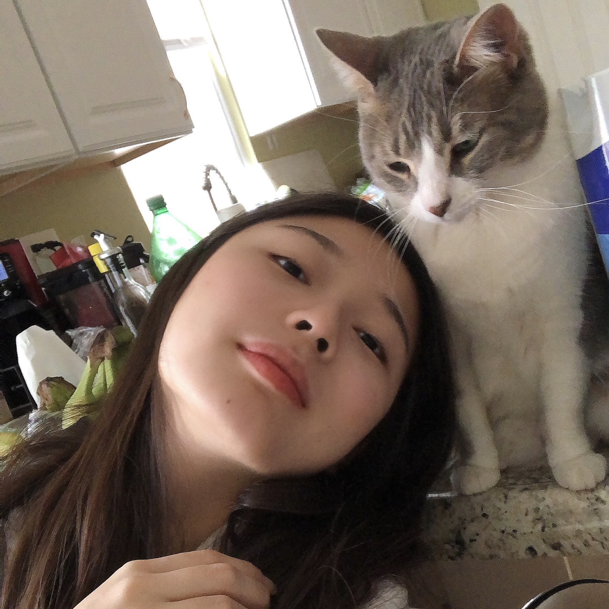

Hi, there,
Come and get to know Bingyi

Grow and raised in Liaoyang, China.
I spent most of my childhood at my mom's dental clinic, seeing the world not only from my own eyes but also from patients with different personalities and backgrounds.
That triggered me to become a product designer, which able to understand users' unarticulated needs and provide the most straightforward answer to them while considering the best accessibility as well.
I am studying HCI specialized in UX design at the University of Michigan the school of Information, looking for future opportunities to grow.
My Cats

Scroll Up and Down this page to see the parallax scrolling effect.
Scroll Up and Down this page to see the parallax scrolling effect.
This div is just here to enable scrolling.
Tip: Try to remove the background-attachment property to remove the scrolling effect.